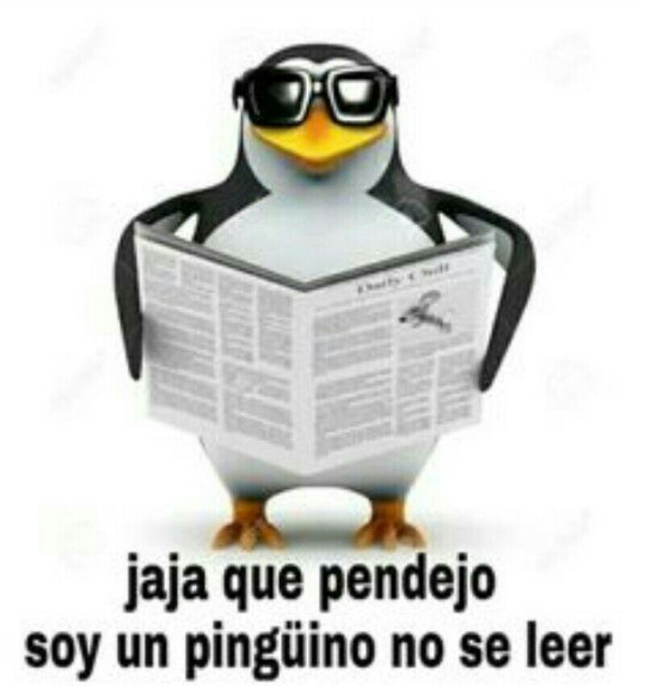
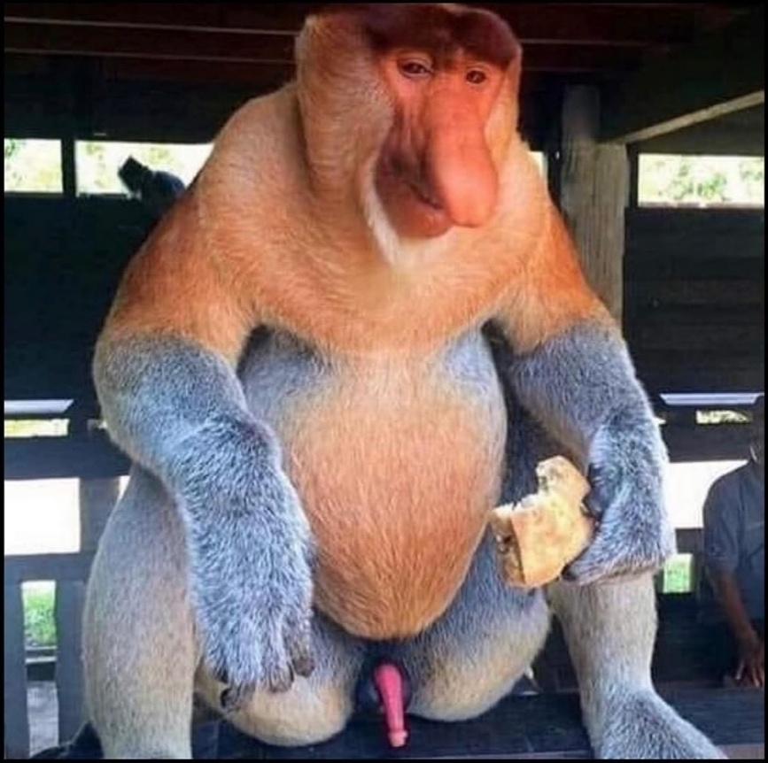

Animalieai buruz sortu dudan webgune bat
Pinguinoak itsas hegaztiak dira, Spheniscidae familiakoak.
Batez ere Hego Hemisferioan bizi dira, baina Spheniscus mendiculus espeziea Ekuatoretik iparraldera bizi da, Galapagoetan.
Uretan bizitzeko adaptazio handia dute, orokorrean luma zuri-beltz kontrastatuak izaten dituzte eta euren hegalak igeri egiteko eboluzionatu dute.
Pinguino gehienek krill, arrain eta txipiroiak jaten dituzte, baita ur-azpian jaten ari direnean ehizatzen dituzten beste espezie batzuk.
Euren bizitzaren erdia lehorrean eta beste erdia itsasoan ematen dute, gutxi gorabehera.
Pinguinoak Antartikarekin lotzen badira ere, espezie gutxi dira klima hotzetara moldatuta daudenak, eta asko klima epelagoetan bizi dira,
baita Ekuatore inguruan ere.
Pinguinoek tamaina desberdina izaten dute espeziearen arabera; 30cm eta 110cm artekoa izan daitezke. Pinguinorik handiena Aptenodytes forsteri
espeziea da, 35 kilogramo arteko pisua izan dezakena. Txikiena Eudyptula minor espeziea da, 40 zentimetroko altuera eta kilogramo bateko pisua
duena. Orokorrean Bergmannen araua betetzen dute eta txikienak gune beroetan eta handienak gune hotzetan bizi ohi dira. Hegazti hauen mokoa oso
sendoa da eta gorputzaren estalgarri hotzetik babesten dituen gantz-geruza lodia dute eta beste hegaztietan ez bezala alde biluzirik uzten ez
duten lumak dituzte. Isatsa motza eta zurruna du eta hankak oso atzean dauzka, sabelean, uretan hobeto mugitzeko.
Tximino sudurrandia (Nasalis larvatus) Borneon bizi den zuhaitzetako
Cercopithecoidea bat da, Nasalis generoko espezie bakarra. Haren inguruneak eskualde paduratsuak, mangladiak eta kostaldeko basoak dira eta talde
mota ar heldu batek eta eme heldu talde batek osatzen dute, euren kumeekin. Gutxienez lau kideko taldeak sortzen dituzte eta gehienez ere 21
kide izaten dira. Arrak heldutasunera heldutakoan, kanpora ateratzen dira eta beste taldeak sortu, askotan oraindik bikotea aurkitu ez duten
bikotegabeen taldeak. Batez ere fruituak, hostoak, haziak eta ornogabeak jaten dituzte.
Arrak handiagoak dira emeak baino: arren tamaina 66-76 cm. artean dago eta emeena, 53tik 64ra. Pisuan, arrek 16-20 kg dituzte eta emeek, 7 eta
11 artean.